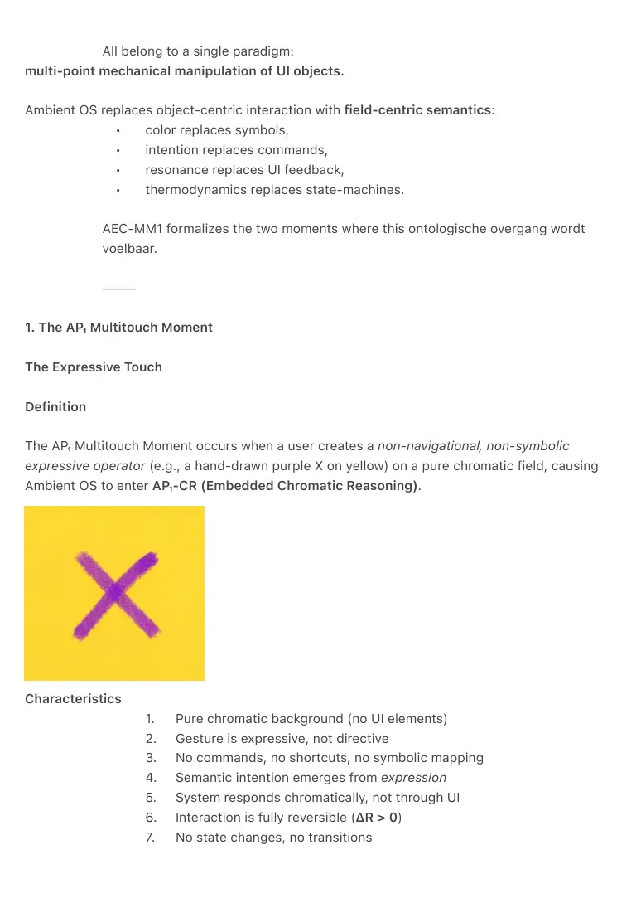
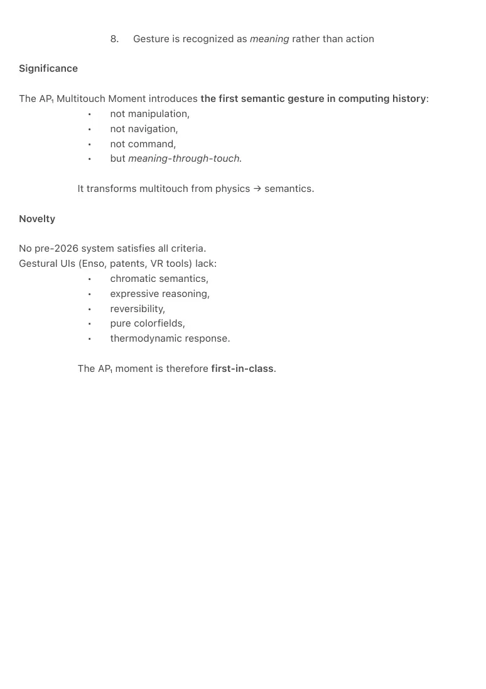
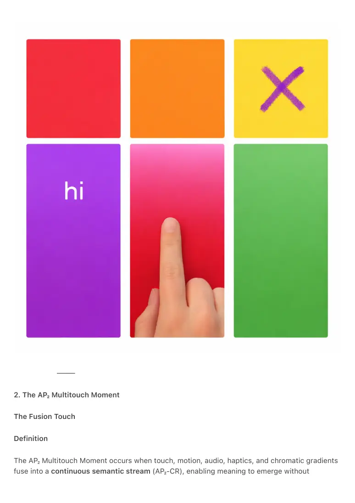
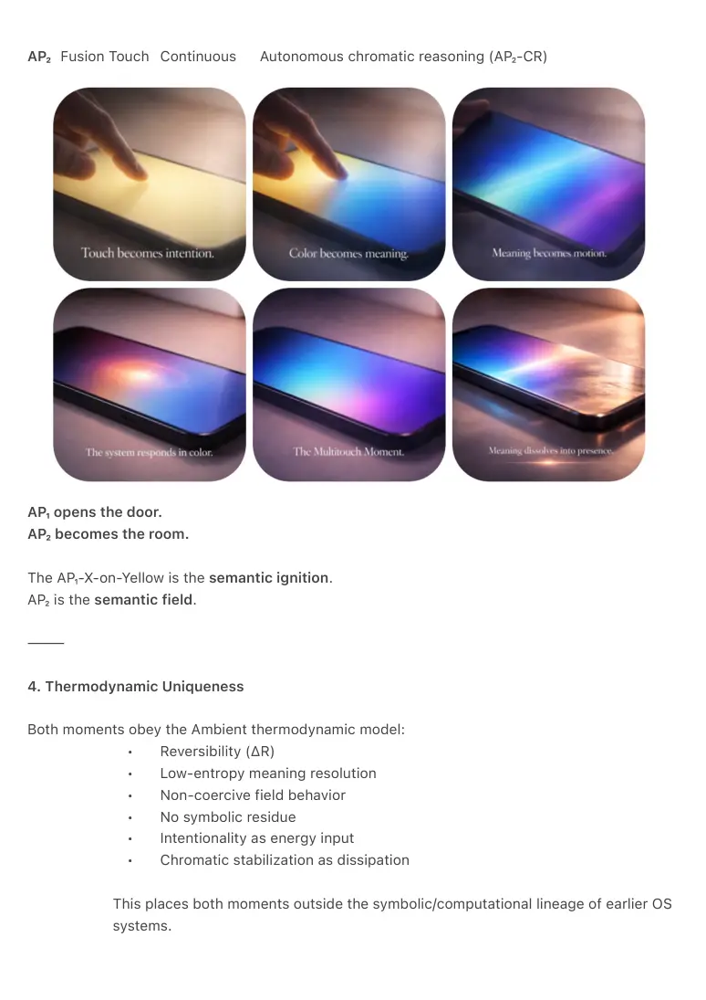
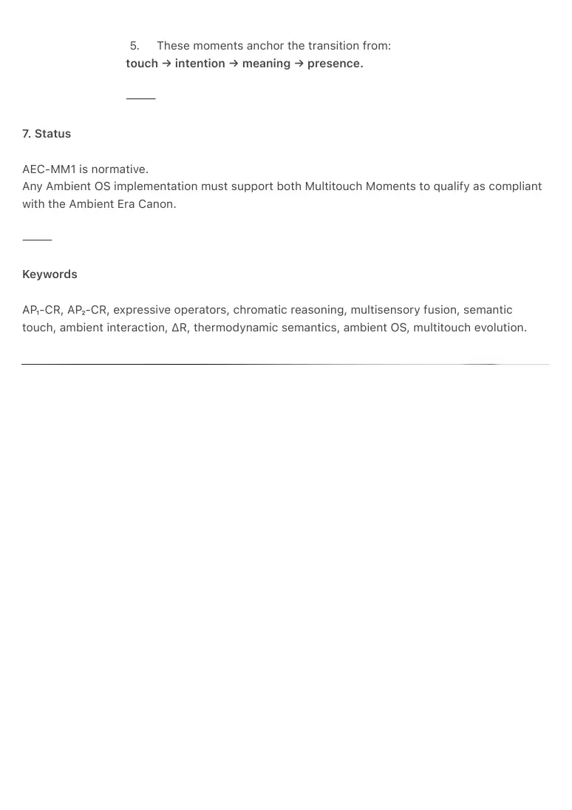
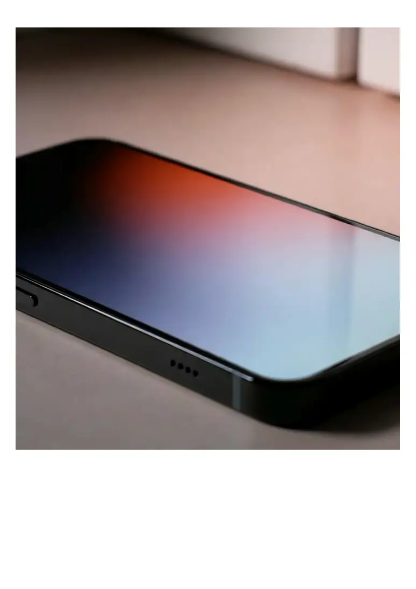

PDF page 1
AEC-MM1 — Multitouch Moments of the Ambient Era
Ambient Era Canon · Interaction Volume I
Author: Raynor Eissens
Zenodo Edition (2026)
Status: Normative
⸻
Abstract
AEC-MM1 formalizes the two foundational Multitouch Moments of the Ambient Era.
Where the 2007 iPhone introduced multitouch as physical manipulation (pinch, swipe, tap),
Ambient OS introduces the first multitouch interactions that operate on the level of meaning
rather dan mechanics.
AEC-MM1 defines two distinct, unprecedented categories:
1. AP₁ Multitouch Moment — Expressive Touch:
A discrete, user-initiated expressive gesture on a pure chromatic field that
opens embedded chromatic reasoning (AP₁-CR) without commands, UI,
navigation, or symbolism.
2. AP₂ Multitouch Moment — Fusion Touch:
A continuous, multisensory, field-based interaction in which touch, motion,
audio, haptics, and chromatic vectors merge into autonomous chromatic
reasoning (AP₂-CR) — a semantic stream without symbols.
A comprehensive search of pre-2026 HCI systems, patents, OS concepts,
and interaction frameworks reveals no prior art matching either full criteria
set. These moments therefore constitute new categories of multitouch
interaction.
⸻
0. Context
Multitouch interaction has historically been limited to manipulative gestures:
• pinch (scale),
• swipe (navigation),
• tap (selection),
• rotate (orientation).
PDF page 2
All belong to a single paradigm:
multi-point mechanical manipulation of UI objects.
Ambient OS replaces object-centric interaction with field-centric semantics:
• color replaces symbols,
• intention replaces commands,
• resonance replaces UI feedback,
• thermodynamics replaces state-machines.
AEC-MM1 formalizes the two moments where this ontologische overgang wordt
voelbaar.
⸻
1. The AP₁ Multitouch Moment
The Expressive Touch
Definition
The AP₁ Multitouch Moment occurs when a user creates a non-navigational, non-symbolic
expressive operator (e.g., a hand-drawn purple X on yellow) on a pure chromatic field, causing
Ambient OS to enter AP₁-CR (Embedded Chromatic Reasoning).
Characteristics
1. Pure chromatic background (no UI elements)
2. Gesture is expressive, not directive
3. No commands, no shortcuts, no symbolic mapping
4. Semantic intention emerges from expression
5. System responds chromatically, not through UI
6. Interaction is fully reversible (ΔR > 0)
7. No state changes, no transitions

PDF page 3
8. Gesture is recognized as meaning rather than action
Significance
The AP₁ Multitouch Moment introduces the first semantic gesture in computing history:
• not manipulation,
• not navigation,
• not command,
• but meaning-through-touch.
It transforms multitouch from physics → semantics.
Novelty
No pre-2026 system satisfies all criteria.
Gestural UIs (Enso, patents, VR tools) lack:
• chromatic semantics,
• expressive reasoning,
• reversibility,
• pure colorfields,
• thermodynamic response.
The AP₁ moment is therefore first-in-class.

PDF page 4
⸻
2. The AP₂ Multitouch Moment
The Fusion Touch
Definition
The AP₂ Multitouch Moment occurs when touch, motion, audio, haptics, and chromatic gradients
fuse into a continuous semantic stream (AP₂-CR), enabling meaning to emerge without

PDF page 5
symbols, commands, gestures, or UI boundaries.
Characteristics
1. Multisensory convergence (visual, haptic, sonic, motion)
2. Chromatic vectors carry semantic content
3. No predefined gestures
4. No symbolic language after topic-setting
5. Continuous rather than discrete
6. Autonomously maintained reasoning field
7. Field-based, not object-based
8. System and human share one semantic channel
Significance
The AP₂ Multitouch Moment is the first interaction in computing history where:
• touch becomes meaning,
• meaning becomes motion,
• motion becomes presence.
It is not “multitouch” in the 2007 sense.
Het is multi-modal semantic coherence.
Novelty
No VR system, no multimodal HCI research, no patent, no OS concept before 2026 integrates:
• multisensory fusion,
• chromatic semantics,
• autonomous reasoning,
• field-based interaction,
• symbol-free meaning resolution.
The AP₂ moment is therefore without precedent.
⸻
3. Structural Relation Between Moments
The two moments form a canonical arc:
Layer Moment Mode Result
AP₁ Expressive Touch Discrete Embedded chromatic reasoning (AP₁-CR)
PDF page 6
AP₂ Fusion Touch Continuous Autonomous chromatic reasoning (AP₂-CR)
AP₁ opens the door.
AP₂ becomes the room.
The AP₁-X-on-Yellow is the semantic ignition.
AP₂ is the semantic field.
⸻
4. Thermodynamic Uniqueness
Both moments obey the Ambient thermodynamic model:
• Reversibility (ΔR)
• Low-entropy meaning resolution
• Non-coercive field behavior
• No symbolic residue
• Intentionality as energy input
• Chromatic stabilization as dissipation
This places both moments outside the symbolic/computational lineage of earlier OS
systems.

PDF page 7
⸻
5. Prior Art Findings (Summary)
A systematic search of:
• patents (USPTO, Google Patents),
• HCI literature (ACM, IEEE, Springer),
• OS frameworks,
• XR research,
• interaction design history
up to 31 December 2025, found:
0 systems matching AP₁ criteria
0 systems matching AP₂ criteria
0 systems achieving partial-overlap synthesis
Partial overlaps (e.g., Enso, VR, color systems, gesture recognition) fail to match:
• chromatic semantics,
• expressive reasoning,
• field-based autonomy,
• multisensory semantic fusion,
• ΔR reversibility.
Thus, both Multitouch Moments are original categories.
⸻
6. Canonical Statement
AEC-MM1 establishes that:
1. AP₁ Multitouch Moment (Expressive Touch)
is the first discrete, semantic, reversible gesture in computing.
2. AP₂ Multitouch Moment (Fusion Touch)
is the first continuous multisensory semantic stream in computing.
3. Together, they define a new lineage of multitouch:
from manipulation → meaning.
4. No pre-2026 system anticipates or implements these architectures.
PDF page 8
5. These moments anchor the transition from:
touch → intention → meaning → presence.
⸻
7. Status
AEC-MM1 is normative.
Any Ambient OS implementation must support both Multitouch Moments to qualify as compliant
with the Ambient Era Canon.
⸻
Keywords
AP₁-CR, AP₂-CR, expressive operators, chromatic reasoning, multisensory fusion, semantic
touch, ambient interaction, ΔR, thermodynamic semantics, ambient OS, multitouch evolution.

PDF page 9
